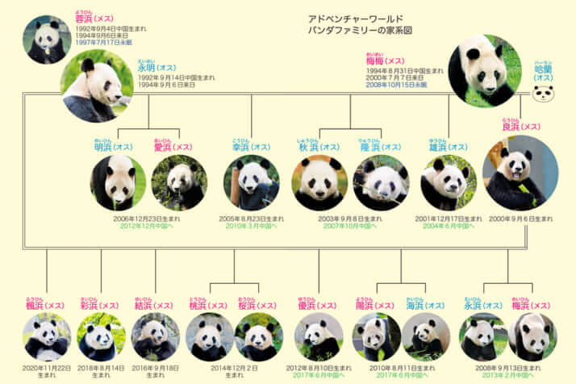
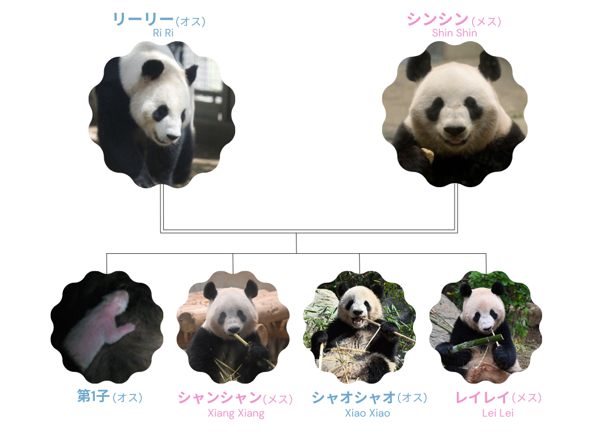

パンダについて
パンダは、体や頭がまるまるとしている、白と黒のツートンカラーであることが特徴的な動物です。
優しくおっとりとした性格をしています。
| 学名/和名 | Ailuropoda melanoleuca/ジャイアントパンダ |
|---|---|
| 全長 | 120~150cm |
| 体重 | 80~150kg 子供の体重は100~200g程度 |
| 生息地域 | 海抜3,600ｍ以下の森林地帯 |
| 主食 | ササ、タケノコ、ニンジン、リンゴなど まれに昆虫や小動物を食べることも |
| 特技 | 木登り 実は降りるのは苦手で木から落ちることもしばしば |
| その他 | 基本的にパンダは発情期以外は一人暮らしで、 一日の睡眠時間は10～16時間であり、冬ごもりはしない。 異常な音を聴いたらすぐ逃げるなど、臆病なところがある。 |


| 名前・性別 | 誕生日 | 一言 | 動物園 |
|---|---|---|---|
| ラウヒン(良浜)・メス | 2000年9月6日 | 8回の出産で10頭の赤ちゃんを産み育ててきた、ベテランのお母さんパンダ。 | アドベンチャーワールド |
| ユイヒン(結浜)・メス | 2016年9月18日 | 出生時の体重が197gと、アドベンチャーワールドで一番大きな赤ちゃんとして誕生したパンダ。頭の上のとんがりがチャームポイント！ | アドベンチャーワールド |
| サイヒン(彩浜)・メス | 2018年8月14日 | アドベンチャーワールドで最も小さく誕生（出生時：75g）したパンダ。 | アドベンチャーワールド |
| フウヒン(楓浜)・メス | 2020年11月23日 | アドベンチャーワールドでは一番年下の末っ子パンダ。とても好奇心旺盛な性格！ | アドベンチャーワールド | リーリー(力力)・オス | 2005年8月16日 | 優しくおっとりとしたマイペースな性格だが、足をすべらせて転ぶなど、少しおっちょこちょいな面も持っているお父さんパンダ。 | 恩賜上野動物園 |
| シンシン(真真)・メス | 2005年7月3日 | 好きな食べ物のためなら、トレーニングにも積極的に付き合うほどの食いしん坊！ | 恩賜上野動物園 |
| シャオシャオ(暁暁)・オス | 2021年6月23日 | 上野動物園で初めて生まれた双子パンダのうちの一頭。とても感情表現が豊か！ | 恩賜上野動物園 |
| レイレイ(蕾蕾)・メス | 2021年6月23日 | シャオシャオと共に生まれたパンダ。マイペースでおっとりしているが、要領のいい面も。 | 恩賜上野動物園 |